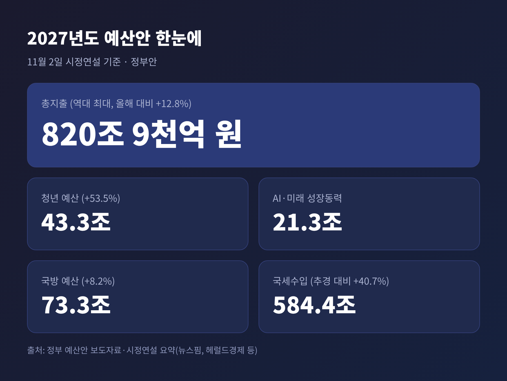
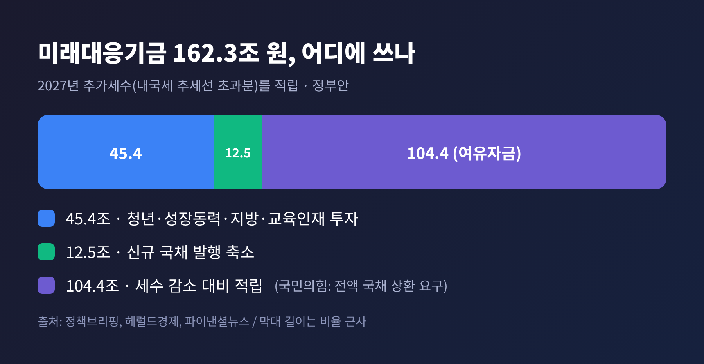
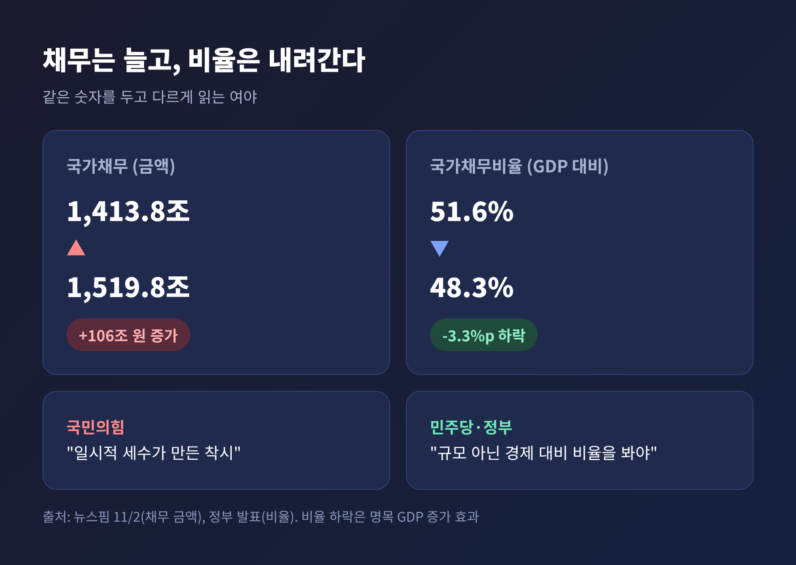
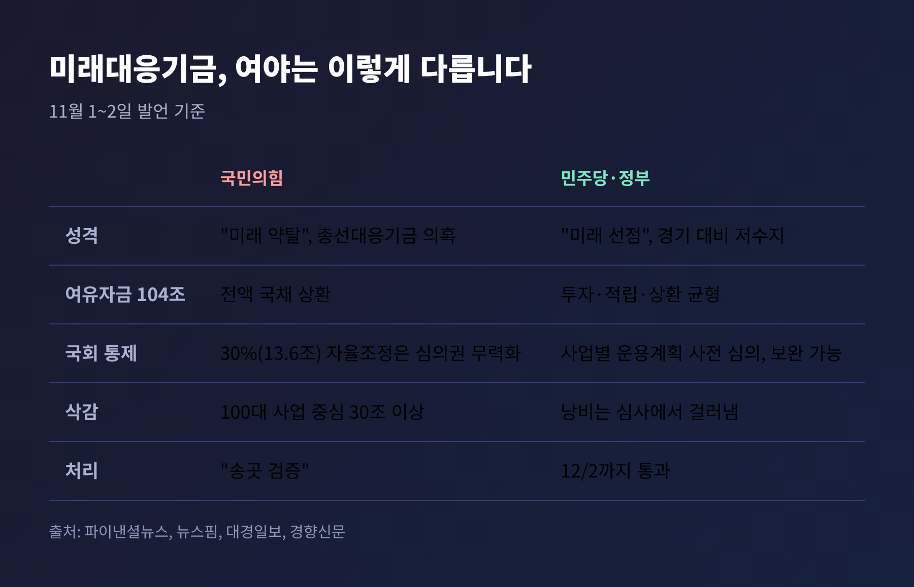
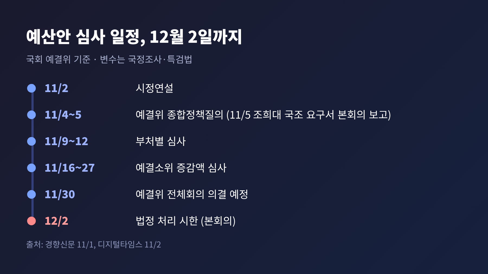

2일 이재명 대통령이 국회에서 2027년도 예산안 시정연설을 했습니다. 총지출은 820조 9천억 원으로 역대 최대인데, 여야 충돌의 중심은 총액이 아니라 '미래대응기금'이었습니다. 이번 글에서는 이 기금이 무엇이고, 왜 쟁점이 되었으며, 12월 2일 법정시한까지 어떤 일정이 남았는지 정리해 보겠습니다.
연설은 '소수의 성장에서 모두의 성장으로'라는 문장을 중심에 두었습니다. 대통령은 "관건은 실행과 속도"라며 예산안과 부수법안을 12월 2일까지 처리해 달라고 요청했습니다.
본회의장 풍경은 갈렸습니다. 뉴스핌 보도에 따르면 민주당·조국혁신당 의원들은 연설 중 30차례 박수를 쳤습니다. 국민의힘 의원들은 "1400조 나라빚+162조 미래빚더미기금"이라고 적은 피켓을 책상에 붙이고 침묵했습니다.
연설 도중 "왜 신규 국채를 발행하느냐"는 항의가 나오자 대통령이 약 40초간 말을 멈추기도 했습니다. 연설이 끝나자 국민의힘 의원들은 곧바로 퇴장했습니다. 장동혁 국민의힘 대표는 "국민이 듣고 싶은 말은 한 마디도 하지 않았다"고 적었고, 민주당 전은수 원내대변인은 "시정연설부터 제대로 경청하라"고 맞받았습니다.

정부안의 골격은 이렇습니다. 총지출 820조 9천억 원은 올해 본예산(727조 9천억 원)보다 93조 원, 12.8% 많습니다. 증가 규모도, 증가율도 역대 최대라는 것이 정부 설명입니다.
돈이 어디서 나오는지도 눈여겨볼 대목입니다. 내년 국세수입은 584조 4천억 원으로, 올해 추경 기준 415조 4천억 원보다 40.7% 늘어납니다. 반도체 호황으로 법인세(216조 7천억 원)와 소득세(180조 원)가 크게 불어난다는 전제입니다.
분야별로는 청년 예산이 43조 3천억 원(53.5% 증가), 인공지능·미래 성장동력이 21조 3천억 원, 국방이 73조 3천억 원입니다. 수도권 중앙행정기관 44곳을 단계적으로 세종으로 옮기는 계획도 담겼습니다.
정부는 재정건전성도 함께 내세웁니다. 관리재정수지는 국내총생산(GDP) 대비 -3.9%에서 -0.1%로, 국가채무비율은 51.6%에서 48.3%로 낮아진다는 것입니다. 숫자만 보면 지출은 크게 늘고 적자는 거의 사라지는 셈입니다. 이 간극을 설명하는 장치가 바로 미래대응기금입니다.
정부가 말하는 미래대응기금은 이렇습니다. 최근 10년 내국세 추세선을 넘어서는 '추가세수' 162조 3천억 원을 따로 모아 두는 기금입니다. 정부는 "투자 플랫폼이자 재정 안정화 장치"라고 설명합니다.
쓰임새는 세 갈래로 나뉩니다.

세수가 넉넉할 때 쌓아 두었다가 불황에 꺼내 쓰겠다는 구상입니다. 핵심은 늘어난 세수를 그해 지출에 섞지 않고, 처음부터 기금이라는 별도 그릇에 담아 운용한다는 점입니다.
국민의힘의 비판은 크게 세 갈래로 읽힙니다.
첫째, 쓰임새입니다. 정점식 원내대표는 104조 원을 국가채무 상환에 쓰지 않고 쥐고 있는 이유를 물으며 "미래대응기금인가, 총선대응기금인가"라고 했습니다. 2028년 총선을 앞두고 쓰려는 것 아니냐는 의심입니다. 임이자 정책위의장은 100대 문제사업을 중심으로 최소 30조 원을 깎고, 여유자금 104조 원 전액을 국채 상환에 쓰는 방향으로 심사하겠다고 예고했습니다.
둘째, 국회 통제입니다. 정부는 국회 의결 없이 기금 주요 항목별 지출을 최대 30%까지 바꿀 수 있습니다. 국민의힘은 이 규모가 13조 6천억 원에 이른다며 "예산 심의권을 무력화한다"고 주장합니다.
셋째, 채무입니다. 국민의힘은 채무비율 하락을 "반도체 호황이 만든 일시적 착시"라고 부릅니다. 실제로 뉴스핌 집계를 보면 국가채무는 1,413조 8천억 원에서 1,519조 8천억 원으로 106조 원 늘어납니다. 비율이 내려가는 것은 빚이 줄어서가 아니라 분모인 명목 GDP가 더 빨리 커지기 때문입니다.

민주당은 다르게 봅니다. 채무 규모가 아니라 경제 규모 대비 비율을 봐야 한다는 입장입니다. 기금은 경기 침체에 대비한 '저수지'이며 일회성 지출로 쓰지 않고 미래 투자로 돌리는 장치라고 설명합니다.
국회 통제 논란에는 기금 사업별 운용계획이 사전에 심의를 받는다고 답합니다. 전은수 원내대변인은 "낭비가 걱정되면 심사에서 걸러내고, 기금 운용이 걱정되면 통제 장치를 보완하면 된다"고 했습니다. 박성준 수석대변인은 이번 예산을 "미래 선점 예산안"이라 부르며 12월 2일까지 반드시 통과시키겠다고 밝혔습니다.
대통령은 국채 순증이 "거의 없다"고 했습니다. 발행한 국채 대부분이 기존 국채 상환에 쓰인다는 취지입니다. 다만 뉴스핌 보도는 내년 국고채 순증이 96조 3천억 원으로, 올해 109조 4천억 원보다 줄지만 0은 아니라고 짚었습니다. 한편 대통령이 사전환담에서 추가세수를 국채 상환에 써야 한다는 야당 주장에 "일부 타당성이 있다"고 밝혔다는 보도(서울경제)도 있어, 접점이 아주 없지는 않아 보입니다.

양측 주장을 가늠할 잣대는 국회예산정책처(예정처) 분석입니다. 예정처는 기금의 핵심 재원인 추가세수가 2028년 약 57조 3천억 원으로 줄고, 2029년부터는 끊길 것으로 내다봤습니다. 뉴스1 보도에 따르면 예정처는 이런 재원이 "미래대응투자 재원으로 적합성이 현저히 떨어진다"고 평가했습니다.
더 눈에 띄는 대목은 경직성입니다. 아주경제 보도를 보면 4대 사업계정 사업비 45조 3,625억 원 가운데 46.7%(21조 1,973억 원)는 아동기본수당, 청년미래적금처럼 해마다 써야 하는 성격입니다. 세수가 줄어도 줄이기 어려운 지출을 일시적 세수로 시작하는 셈입니다.
다만 예정처가 국민의힘 손을 일방적으로 들어 준 것은 아닙니다. 추가세수 전액을 국채 상환에 쓰면 시장 유동성이 위축될 수 있다며 배분 원칙이 필요하다고 했습니다. 세계잉여금 정산 후 잔액의 최소 51%를 국채 상환 기준으로 검토하자는 제언도 내놓았습니다. 양쪽 주장이 모두 일리가 있다는 뜻으로 읽힙니다.
일정은 빠듯합니다. 경향신문과 디지털타임스 보도를 종합하면 흐름은 이렇습니다.

변수는 예산 밖에 있습니다. 민주당은 11월 5일 조희대 대법원장 국정조사 요구서를 본회의에 보고하고, 계획서 의결을 12일 또는 19일로 잡고 있습니다. 조작기소 특검법도 11월 중 상정할 계획입니다. 예결위 관계자는 이런 사안이 예산 협상을 교착시킬 수 있다고 우려했습니다. 국민의힘은 국정조사에 필리버스터를 쓰는 방안도 거론하는데, 예산 심사 중에는 부담이라는 신중론도 있습니다.
기억해 둘 점이 있습니다. 민주당은 161석으로 단독 처리가 가능한 구조지만, 정점식 원내대표는 합의해 주기보다 "송곳 검증"을 하겠다고 했습니다. 12월 2일에 합의 처리가 될지, 단독 처리나 시한 초과로 갈지는 아직 알 수 없습니다.
정리하면 이렇습니다. 이번 예산 정국의 쟁점은 '얼마나 쓰느냐'보다 '늘어난 세수를 어떻게 나누느냐'입니다. 투자, 적립, 채무 상환 세 용도의 비율을 어디서 맞추느냐가 핵심입니다. 정태호 재정경제위원회 여당 간사도 "적정한 배분 비율과 균형점"이 중요하다고 했으니, 협상의 여지는 그 안에 있어 보입니다.
관전 포인트는 세 가지입니다. 첫째, 여유자금 104조 원 가운데 얼마가 국채 상환으로 옮겨 가는지. 둘째, 기금 지출 자율조정 한도 30%가 낮아지는지. 셋째, 국민의힘이 예고한 30조 원 감액이 어느 수준에서 절충되는지입니다.
호황이 영원하지 않다는 점은 여야가 모두 알고 있습니다. 그 호황을 쌓아 둘 것인가, 지금 쓸 것인가, 빚을 갚을 것인가를 두고 국회가 한 달 동안 답을 찾아야 합니다. 세금이 어떻게 쓰이는지 지켜보시는 분이라면, 11월 4일 종합정책질의부터 눈여겨보시길 권합니다.